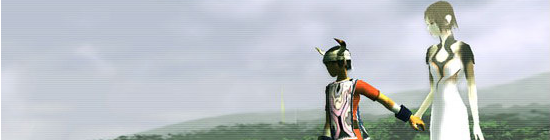
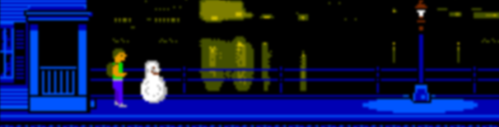

Ueda, A Boy, His Blob, A Girl, A Horse
2011-03-25 16:39:31
status: inherit
author: Bryan
UEDA'S PLAYER - AI RELATIONSHIPS
I came across this Fumito Ueda quote as I browsed through a few recent articles on Gamasutra:
Gamasutra: All the games you've worked on are centered on a really important relationship, like with Ico and Yorda, or with the boy and the creature in The Last Guardian. What do strong relationships mean to you in your games?
Fumito Ueda: Well, there's a significant relationship between the main character controlled by the player, and then the AI character -- Yorda for Ico, the Colossi, and also the horse in Shadow of the Colossus, and in Last Guardian it's the beast -- but I don't have an intentional plan or some big concept, or anything like this. But I think, maybe, I'm thinking that there's something that can be said about relationships, between the AI and the player, that can only function in the computer entertainment world.
Compelling yet minimally presented character relationships are a memorable hallmark of Ueda's games, the effect of which is made possible by the interactive nature of the medium. How could the player-AI relationship between Ico and Yorda be possible otherwise - where the player isn't personally calling Yorda to grab his/her hand and run for their lives? Although to be sure, some gamers found her neediness irritating, I would argue that the atmosphere created by the simple moments of Ico-Yorda communication and interaction lead to something very rare in games. Very few titles succeed in having a similar effect.

I'll hold off on rambling about this for the moment (and for Ueda's games, ramble I indeed can), to bring up an ostensibly unrelated bit of game news; specifically that WayForward's A Boy and His Blob remake has been released last week for Wii.
Its too early for me to comment on the remake, as I haven't played it yet, but I'd argue that the original A Boy and His Blob on NES has a lot more in common with the aforementioned illusive qualities of Ueda's games than one might realize.
GAMEPLAY-ORIENTED CHARACTER INTERACTION
Trying to draw a connection between A Boy and His Blob and a game like Ico or Shadow of the Colossus might seem like a stretch... but hear me out. This is bound to be a rambling post so bear with me...
Ueda's character relationships are highly minimal in a sense: they are typically characterized by a lack of traditional narrative, and instead are built entirely through player action. Even when cutscenes are in play, they don't aim to hit the player over the head with the relationships between the character - they are understated, simple, and serve only to direct player attention to issues involving advancement of the plot (which is minimalist to begin with).
Cutscenes illustrating the relationship between Yorda and Ico involve simply setting the context and finally at the end of the game, its resolution. Ico and Yorda can't understand each other, but they'll need each other. There is little to no narrative drama or complexity that isn't equally matched by the drama created from playing the game itself.
What do I remember about Yorda? I remember holding hands, sitting down to save, coaxing Yorda into making a jump, calling her name to come to me. I remember running desperately to her as the shadows tried to hold me back, and pulling her up to safety. I remember her absentmindedly strolling and losing herself in her surroundings as I try to understand what to do next. I remember her fear as I try to defend her. This was truly the stuff of interactive drama, all told through the gameplay experience itself.
What about Wander and Agro? Why is it any different from Link and Epona; from the protagonist and dog of Fable 2? Wander's relationship with his horse is much less complex and emotionally charged, some would argue, than that of Ico and Yorda. There is less of a protective instinct at play, less of a feeling of personal responsibility. In its place is a partnership of mutual respect - just as archetypal and immediately recognizable as Ico and Yorda's relationship, but triggering different instincts and emotions in the player.
As characters, Link and Epona have a similar relationship, but to very different effect. The game continually illustrates their relationship through cutscenes, but the gameplay doesn't reinforce the emotions that the narrative is meant to promote. Although expressed as a central character figure and is often supposed to tug at our heartstrings ("Look, he's hurt his foot!"), in the game Epona fills the sidekick role, the tool of the player.
Additionally Epona is approached more as a traditional "game" element, rather than trying to express him as a living, breathing, thinking entity. If you have the means to summon him, he could be theoretically around the world somewhere, but he comes. He disappears and appears and there is little expression of realism in communicating that Epona acts like something approaching a real horse. Finally, controlling Epona is simply a matter of extending Link's controls to the horse itself, with exceptions being digging in the spurs, and so on. Tilt the analog stick left, Epona turns left in response to the movement. But how is that functionally different from controlling Link himself?
At the start of the game, Agro also seems to be simply a tool for the player, but the shared experiences of fighting the colossi and wandering the landscape bring the player and Agro together. Although you control Wander, gameplay is a shared experience, in a sense. Rather than being an accessory to the experience, Agro is a necessity; dashing in and out of a colossi's view, leaping onto Agro's back as an enormous foot crashes down where Wander would have been. The sheer repetition of these events have a constructive effect on this formation of a player-AI bond. After Agro has saved Wander's life for the 10th time, its hard not to appreciate him, and even harder to be unaffected by a certain moment towards the end of the game.
Agro, like Yorda, has a mind of his own. The player doesn't control the horse itself, he/she controls Agro's actions as they relate to the horse - pull back the reins. Give a little kick, or dig in the spurs. Lean back. By tilting the analog stick to the left, Agro doesn't move - Wander moves the reins. Agro responds to Wander's direction in a believable manner; protesting, or acquiescing accordingly.
The hero's dog in Fable 2? Again, he's approached as a game element - a feature to expand on the player's experience, but not as something central to the game experience itself, despite what we were expecting out of the game. There's no opportunity for the player's relationship with the dog to grow beyond what it is at the beginning - he learns new tricks, he gets better at finding treasure and fighting bad guys, and so on - but no growth. Now this was still enough for me to be outraged at his fate in one particular ending of the game, but again - there's no drama through the moments of gameplay themselves. The character of the dog is an accessory, a supporting role - made even more so by the lack of his (her?) centrality to the gameplay experience.
Now that I have outed myself as a rabid, possibly incoherent Ueda fanboy, let's move on (back) to 1989.
DON'T FROWN, BLOB
There is obviously much less to write about A Boy and His Blob. Its a simple, quirky, flawed game that manages to exhibit a nascent version of the same player-AI relationship that Ueda's games are known for.

"Blobert" is extremely simple. He follows the player; he likes to eat jellybeans. When he eats a jellybean, he transforms, and later transforms back to his original blob form with a big smile on his ... er ... face. When he tries and fails to catch a poorly thrown jellybean, that big, broad smile transforms into an equally broad frown. Blobert wears his heart on his sleeve, and a few moments go by before the smile returns. Another jellybean helps ease the healing process, of course.
Simple, right? So what's in common; what's compelling? I would argue that the centrality of the AI character to gameplay, as well as the shared experience progressing through the game are where the similarities lie. You need your Blob, your Blob needs you. The early tech ensures that the entire experience of the character relationship is told through gameplay, not through heavy-handed exposition - it's minimalist by technological limitation. Blob's emotional expressions are effective through their simplicity; there is no attempt at raising the level of narrative to grasp at a cinematic quality that so many modern games try to emulate. Blobert follows you because he needs you, and you need his help in order to help him. Theres a simple honesty to the relationship that is unfettered by clumsy narrative - the game doesn't attempt to be E.T., it lets the gaming experience speak for itself.
One could argue that there is far less drama in singular moments of gameplay than Ueda's games, but the idea is the same.
Another thing: an area where these games have something strongly in common is a sense of isolation, of solitude. Ico and Shadow of the Colossus, through their minimalism, are incredibly lonely games to play. There are no friendly villagers to chat up, no quest-givers or merchants, in some cases, not even regular hostile encounters. A Boy and His Blob is the same way - there is the empty, quiet street, and the strange and dangerous caves below the subway lines. Finally there is the hostile and deserted alien world - no friendly Blobs to be seen. Isolation helps to drive the bonding process with the AI character - its the classic feeling of "two of us against the world."
DESIGN NOTES: EMOTIONAL IMPACT THROUGH SIMPLICITY
What can the similarities between these ostensibly highly different games teach game developers in building emotional impact through AI-player interaction?
Simple, archetypal, minimal presentation helps to let relationships develop through gameplay, rather than cinematic narrative.
Don't underestimate the impact of simple, everyday moments as player-controlled actions - holding hands, calling out to someone, and so on.
If scripted sequences are necessary to progress through the plot, use them to capitalize on what has already developed in the player through gameplay.
Creating a sense of isolation and dependency can be a powerful thing in building player-AI relationships through gameplay.
Thanks to Justin for helping me brainstorm on this topic.
Comments: